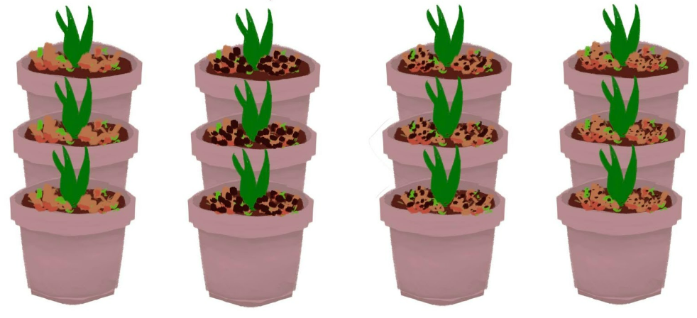

Science Investigatory Project
A. BACKGROUND AND SIGNIFICANCE OF THE STUDY
The Science Investigatory Project dubbed as "The Effect of Coffee Grounds in Compost on the Growth of Basil" allows us to learn about compost's effect on basil. It also allows us to further understand its different functions. The SIP shows the result of coffee grounds as compost, mixed with vegetable scraps as fertilizer on basil.Firstly, composting decreases the need for chemical fertilizers which harms the environment. Composting also reduces methane emissions from landfills, and lowers our carbon footprint. Secondly, composting can be used as an activity which reduces our stress levels after a long day of hard work. MAAAI can and will benefit from our project as it will be utilized to relieve the infected's stress after suffering from stigma and discrimination.
B. STATEMENT OF THE PROBLEM
Coffee, either love it or hate it. One thing for sure though, coffee grounds, especially the pressed ones, take up space and are a massive waste. Therefore, why not use it for plants. But, are coffee grounds an effective additive to compost?
C. HYPOTHESIS
If there are more coffee grounds mixed with the compost, the basil will grow much faster, stronger, and healthier. This is because coffee grounds contain essential minerals for plant growth, like nitrogen and phosphorus. It can absorb heavy metals that contaminate the soil. And it can also attract worms which helps the plants by improving overall farm productivity.
D. REVIEW OF RELATED LITERATURE
Based on the S.I.P,group 1-A focuses on two plant nutrients that are delivered by compost to utilize. Firstly, phosphorus. It is helpful in capturing and converting the sun's energy into useful plant compounds. It is also a vital component of DNA and RNA, in short, it is able to store and regulate information. Because of that, phosphorus is essential to the general health and growth of the plants. Phosphorus moves to the root surface through diffusion. However, the presence of mycorrhizal fungi, which develop a symbiotic relationship with plant roots and extend threadlike hyphae into the soil, can enhance the uptake of phosphorus. Secondly, calcium. It is an essential element in plants. It serves as a constituent of cell walls and membranes and thus contributes to the structure of cells and the upholding of physical barriers against pathogens. Calcium is taken up by roots from the soil solution and delivered to the shoot via the xylem. It may traverse the root either through the cytoplasm of cells linked by plasmodesmata (the symplast) or through the spaces between cells (the apoplast).
 The drawing above is an example of what our set-up would look like
About the Web Designers
This is Ryhana Claire T. Taliño! She is a student from Ateneo de Davao University. She likes to draw, paint, sketch, basically anything involving visual arts. Besides that, she enjoys spending time at the beach, you will always catch her swimming or diving. She enjoys public speaking (as long as she’s prepared) and has a unbearable interest about the stars or anything magical.
Astin Parker Sañano is in 9th grade of ADDU. He likes to play basketball, binge watch tv shows all day, and play chess. He doesn't get that much sleep and he regrets it. He also wishes that he had courage to talk to his crush but he doesn't. He is also scared and terrified of f2f exam so he wants online class to come back.
^